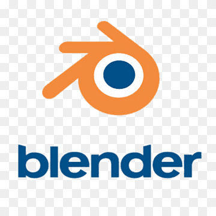
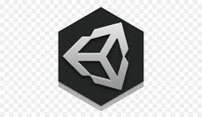

Hi! My name is Disha
and I'm a passionate

My Skillset

Blender Developer
I've been using blender since first sem. It has given be an imaginative way of looking at things. Imagining from where did the series 'Walking Dead' got its animation and visual effects from. Yes its blender. This skill has added on to my skillset and I regularly try to make something I imagine or I see on this app.

UNITY Developer
Unity has been a powerful and versatile game dev platform that enhances our skillset. It helps me create realistic simulations and interactions of the characters that i make in blender. Making animated characters is just what i like to do in my free time.

Character Designer
For being a good game developer we first need to have a good imagination. Therefore character developing is something I'm on to everytime.

HTML Developer
I started to learn front end technologies in second semester which helped me create pretty basic websites. As my interest grew i moved onto more deeper concepts which resulted in making my frontend development stronger. I started to learn about ui/ux as well so that i can be a well-rounder developer.

JAVA Developer
Java was a language we were always told to learn. So finally when i got it in my third semester I started learning it. Since then i've been learning this language and it's different frameworks. It also helps me in game dev with its libraries like LibGDX and Java3D.